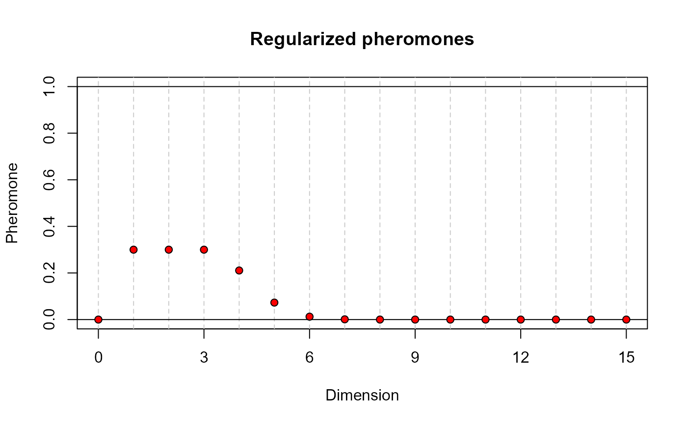
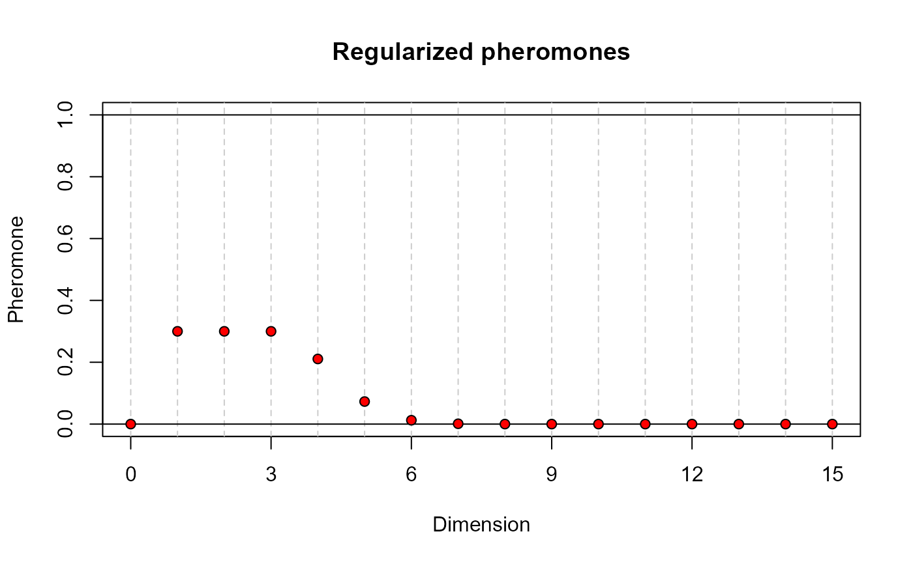
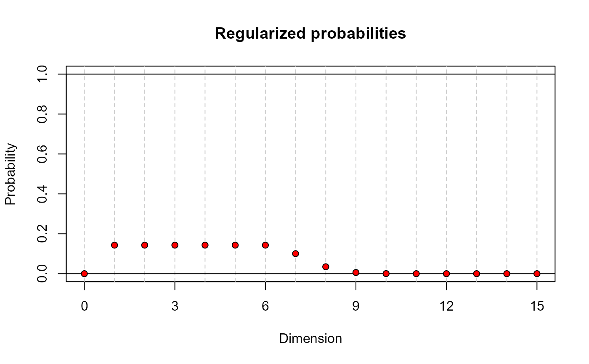
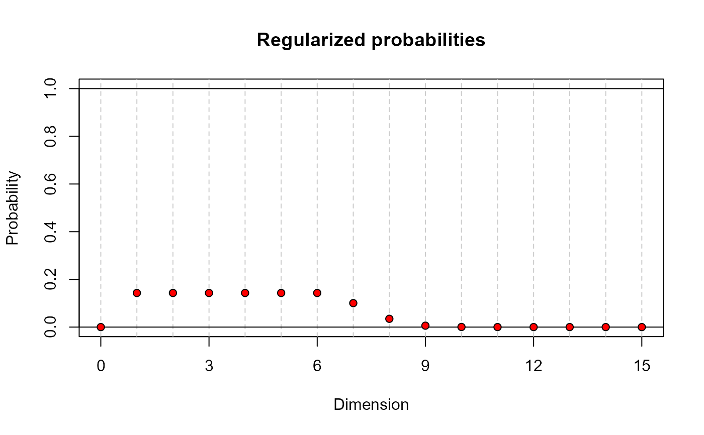

Probability functions for ant colony optimization in funGp
Source:R/7_plottingFunctions.R
decay2probs.RdThis function is intended to aid the selection of the heuristic parameters tao0, delta and dispr in the call to the model selection function fgpm_factory. The values computed by decay2probs are the ones that would be used by the ant colony algorithm as probability load of the links pointing out to projection on each dimension. These values result from the normalization of the initial pheromone loads delivered by the decay function, which are made to sum 1. For more details, check the technical report explaining the ant colony algorithm implemented in funGp, and the manual of the package.
decay2probs(
k,
pmax = NULL,
tao0 = 0.1,
delta = 2,
dispr = 1.4,
doplot = TRUE,
deliver = FALSE
)Arguments
- k
A number indicating the dimension of the functional input under analysis.
- pmax
An optional number specifying the hypothetical maximum projection dimension of this input. The user will be able to set this value later in the call to fgpm_factory as a constraint. If not specified, it takes the value of k.
- tao0
Explained in the description of dispr.
- delta
Explained in the description of dispr.
- dispr
The arguments tao0, delta and dispr, are optional numbers specifying the loss function that determines the initial pheromone load on the links pointing out to projection dimensions. Such a function is defined as
$$tao = tao0 * exp(-.5 * ((p - delta - 1)^2/(-dispr^2/(2*log(.5)),$$
with p taking the values of the projection dimensions. The argument tao0 indicates the pheromone load in the links pointing out to the smallest dimensions; delta specifies how many dimensions should preserve the maximum pheromone load; dispr determines how fast the pheromone load drops in dimensions further than \(delta + 1\). If pmax = k, then the dimension 0, representing no projection, receives a pheromone load identical to that of dimension k. This, in order to represent the fact that both the representation of the function in its original dimension or a projection in a space of the same dimension, are equally heavy for the model. In order to obtain the probability loads, the initial pheromone values are normalized to sum 1. Note that the normalization makes the value of tao0 become irrelevant in the initial probability load. This does not mean that the effect of tao0 is completely removed from the algorithm. Despite the fact that tao0 does not have influence on the selection of the projection dimension during the first iteration, it will be protagonist during the global pheromone update and will have an impact on every further iteration. The argument tao0 is left active in the input just for a better comprehension of the functioning of the mechanisms defining the initial pheromone and probability loads. The default values of tao0, delta and dispr, are 0.1, 2 and 1.4, respectively, which match the default values used by the fgpm_factory function. Check this technical report for more details.
- doplot
An optional boolean indicating if the probability loads should be plotted. Default = TRUE.
- deliver
An optional boolean indicating if the probability loads should be returned. Default = FALSE.
Value
If deliver is TRUE, an object of class "numeric" containing the normalized initial pheromone values
corresponding to the specified projection dimensions. Otherwise, the function plots the normalized
pheromones and nothing is returned.
See also
* decay for the function to generate the initial pheromone load;
* fgpm_factory for heuristic model selection in funGp.
Examples
# using default decay arguments____________________________________________________________
# input of dimension 15 projected maximum in dimension 15
decay(15) # initial pheromone load
 decay2probs(15) # initial probability load
# input of dimension 15 projected maximum in dimension 8
decay(15, 8) # initial pheromone load
decay2probs(15, 8) # initial probability load
# playing with decay2probs arguments_______________________________________________________
# varying the initial pheromone load
decay(15) # input of dimension 15 projected maximum in dimension 15
decay2probs(15) # initial probability load
# input of dimension 15 projected maximum in dimension 8
decay(15, 8) # initial pheromone load
decay2probs(15, 8) # initial probability load
# playing with decay2probs arguments_______________________________________________________
# varying the initial pheromone load
decay(15) # input of dimension 15 projected maximum in dimension 15
 decay(15, tao0 = .3) # larger value of tao0

decay(15, tao0 = .3, delta = 5) # larger tao0 kept to higher dimensions
decay(15, tao0 = .3, delta = 5, dispr = 5.2) # larger tao0 kept to higher dimensions
decay(15, tao0 = .3) # larger value of tao0

decay(15, tao0 = .3, delta = 5) # larger tao0 kept to higher dimensions
decay(15, tao0 = .3, delta = 5, dispr = 5.2) # larger tao0 kept to higher dimensions
 # and slower decay
# varying the initial probability load
decay2probs(15) # input of dimension 15 projected maximum in dimension 15
# and slower decay
# varying the initial probability load
decay2probs(15) # input of dimension 15 projected maximum in dimension 15
 decay2probs(15, tao0 = .3) # larger value of tao0 (no effect whatsoever)
decay2probs(15, tao0 = .3) # larger value of tao0 (no effect whatsoever)
 decay2probs(15, tao0 = .3, delta = 5) # larger tao0 kept to higher dimensions

decay2probs(15, tao0 = .3, delta = 5, dispr = 5.2) # larger tao0 kept to higher dimensions
# and slower decay
# requesting probability values____________________________________________________________
# input of dimension 15 projected maximum in dimension 15
decay2probs(15, deliver = TRUE)
decay2probs(15, tao0 = .3, delta = 5) # larger tao0 kept to higher dimensions

decay2probs(15, tao0 = .3, delta = 5, dispr = 5.2) # larger tao0 kept to higher dimensions
# and slower decay
# requesting probability values____________________________________________________________
# input of dimension 15 projected maximum in dimension 15
decay2probs(15, deliver = TRUE)
 #> [1] 1.916505e-23 2.506106e-01 2.506106e-01 2.506106e-01 1.759595e-01
#> [6] 6.090494e-02 1.039247e-02 8.742019e-04 3.625193e-05 7.411005e-07
#> [11] 7.468779e-09 3.710638e-11 9.088122e-14 1.097302e-16 6.531378e-20
#> [16] 1.916505e-23
#> [1] 1.916505e-23 2.506106e-01 2.506106e-01 2.506106e-01 1.759595e-01
#> [6] 6.090494e-02 1.039247e-02 8.742019e-04 3.625193e-05 7.411005e-07
#> [11] 7.468779e-09 3.710638e-11 9.088122e-14 1.097302e-16 6.531378e-20
#> [16] 1.916505e-23